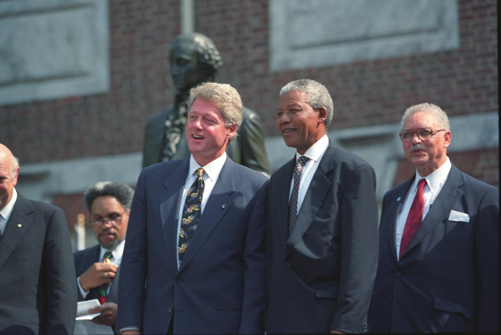

Nelson Mandela
A long walk to freedom

Nelson Mandela with President Bill Clinton at the Independence Hall in Philadelphia, PA, July 4 1993.
Biography of Nelson Mandela:
- 1918 - Mandela was born in the village of Mvezo in Umtata.
- 1933 - Began his secondary education at Clarkebury Methodist High School in Engcobo.
- 1939 - Mandela began work on a BA degree at the University of Fort Hare.
- 1941 - Found work as a night watchman at Crown Mines.
- 1943 - Returned to Johannesburg to follow a political path as a lawyer.
- 1944 - Married Evelyn Mase, a trainee nurse and ANC activist from Engcobo
- 1950 - Mandela took Xuma's place on the ANC national executive, and that same year was elected national president of the ANCYL.
- 1952 - Arrested under the Suppression of Communism Act and stood trial as one of the 21 accused.
- 1958 - Divorced his wife and mother of his children EVelyn, Mandela also got married to Winnie Madikizela, in Bizana
- 1962 - Police captured Mandela along with fellow activist Cecil Williams near Howick.
- 1964 - Mandela and his co-accused were transferred from Pretoria to the prison on Robben Island, remaining there for the next 18 years.
- 1982 - In April, Mandela was transferred to Pollsmoor Prison in Tokai, Cape Town, along with senior ANC leaders Walter Sisulu, Andrew Mlangeni, Ahmed Kathrada, and Raymond Mhlaba.
- 1990 - Mandela was finally released from prison.
- 1993 - Mandela and de Klerk were jointly awarded the Nobel Peace Prize in Norway.
- 1994 - Was inaugurated as South Africa's first black president in Pretoria.
- 1999 - Retired from politics to lead a quiet family life.
- 2004 - At age 85 and amid failing health, Mandela announced that he was "retiring from retirement" and retreating from public life, remarking, "Don't call me, I will call you.
- 2011 - Mandela was briefly hospitalised with a respiratory infection, attracting international attention,before being re-admitted for a lung infection and gallstone removal in December 2012.
- 2013 - After suffering from a prolonged respiratory infection, Mandela died on 5 December 2013 at the age of 95, at around 20:50 local time (UTC+2) at his home in Houghton, surrounded by his family.
"The significance of Mandela can be considered in two related ways. First, he has provided through his personal presence as a benign and honest conviction politician, skilled at exerting power but not obsessed with it to the point of view of excluding principles, a man who struggled to display respect to all ... Second, in so doing he was able to be a hero and a symbol to an array of otherwise unlikely mates through his ability, like all brilliant nationalist politicians, to speak to very different audiences effectively at once."
—Bill Freund, academic
You can get more details about this incredible human being on his wikipedia page.